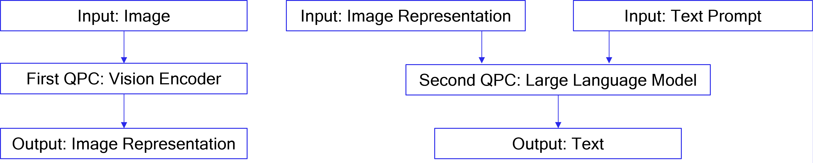

vLLM¶
This guide demonstrates how to add AI 100 backend support to the vLLM open-source library, which simplifies the creation of OpenAI-compatible web endpoints and provides features like continuous batching and other optimizations for LLM inference and serving.
Installation¶
Pre-Built Docker image with vLLM support¶
Pre-built Docker images for Cloud AI with vLLM support are available in the cloud-ai-containers GitHub repo.
Docker build steps¶
Follow these steps to build your own Docker image for Cloud AI with vLLM support.
Refer to this page for prerequisites prior to building the docker image that includes the vLLM installation
Build the docker image which includes the vLLM installation using the build_image.py script.
cd </path/to/apps-sdk>/common/tools/docker-build/
python3 build_image.py --user_specification_file ./sample_user_specs/user_image_spec_vllm.json --apps_sdk path_to_apps_sdk_zip_file --platform_sdk path_to_platform_sdk_zip_file --tag 1.19.8.0
This should create a docker image with vLLM installed.
ubuntu@host:~# docker image ls
REPOSITORY TAG IMAGE ID CREATED SIZE
qaic-x86_64-ubuntu20-py310-py38-release-qaic_platform-qaic_apps-pybase-pytools-vllm 1.19.8.0 3e4811ba18ae 3 hours ago 7.05GB
Docker run steps¶
Once the Docker image is downloaded or built, refer to instructions here to launch the container and map Cloud AI devices to the container.
After the container is launched, activate the virtual environment and run a sample inference using the example script provided.
source /opt/vllm-env/bin/activate
cd /opt/qti-aic/integrations/vllm/
python examples/offline_inference_qaic.py
Installing from source¶
vLLM with qaic backend support can be installed by applying a patch on top of the open source vLLM repo.
# Add user to qaic group to access Cloud AI devices without root
sudo usermod -aG qaic $USER
newgrp qaic
# Create a python virtual enviornment
python3.10 -m venv qaic-vllm-venv
source qaic-vllm-venv/bin/activate
# Install the current release version of `Qualcomm Efficient-Transformers <https://github.com/quic/efficient-transformers>`_ (vLLM with qaic support requires efficient-transformers for model exporting and compilation)
pip install -U pip
pip install git+https://github.com/quic/efficient-transformers@release/v1.19.3_fp8_update
# Clone the vLLM repo, and apply the patch for qaic backend support
git clone https://github.com/vllm-project/vllm.git
cd vllm
git checkout v0.7.0
git apply /opt/qti-aic/integrations/vllm/qaic_vllm.patch
# Set environment variables and install
export VLLM_TARGET_DEVICE="qaic"
pip install -e .
# Run a sample inference
python examples/offline_inference/qaic.py
# Add user to qaic group to access Cloud AI devices without root
sudo usermod -aG qaic $USER
newgrp qaic
# Create a python virtual enviornment
python3.10 -m venv qaic-vllm-venv
source qaic-vllm-venv/bin/activate
# Install the current release version of `Qualcomm Efficient-Transformers <https://github.com/quic/efficient-transformers>`_ (vLLM with qaic support requires efficient-transformers for model exporting and compilation)
pip install -U pip
pip install git+https://github.com/quic/efficient-transformers@release/v1.19.3_fp8_update
# Install Triton for AArch64
mkdir triton-3.0.0;
cd triton-3.0.0;
git clone https://github.com/triton-lang/triton.git -b release/3.0.x --depth=1;
# LLVM git cloning:
cp /triton-3.0.0/triton/cmake/llvm-hash.txt .
mkdir llvm-main && cd llvm-main
export LLVM_HASH="$(cat /path_to/triton-3.0.0/triton/cmake/llvm-hash.txt)"
git clone --recursive https://github.com/llvm/llvm-project.git -b main
cd llvm-project && git checkout ${LLVM_HASH}
# LLVM building:
pip install ninja cmake
mkdir llvm-project/build; cd llvm-project/build;
cmake -G Ninja -DCMAKE_BUILD_TYPE=Release -DLLVM_ENABLE_ASSERTIONS=ON ../llvm -DLLVM_ENABLE_PROJECTS="mlir;llvm" -DLLVM_TARGETS_TO_BUILD="host;NVPTX;AMDGPU"; ninja;
# Triton building:
cd /path_to/triton-3.0.0/triton/python;
export LLVM_BUILD_DIR=/path_to/llvm-main/llvm-project/build;
export LLVM_INCLUDE_DIRS=$LLVM_BUILD_DIR/include; \
export LLVM_LIBRARY_DIR=$LLVM_BUILD_DIR/lib; \
export LLVM_SYSPATH=$LLVM_BUILD_DIR; \
pip wheel .
pip install triton-3.0.0-cp310-cp310-linux_aarch64.whl .This is for Python 3.10, we can download the same for Python 3.8 as well.
# Clone the vLLM repo, and apply the patch for qaic backend support
git clone https://github.com/vllm-project/vllm.git
cd vllm
git checkout v0.7.0
git apply /opt/qti-aic/integrations/vllm/qaic_vllm.patch
# Set environment variables and install
export VLLM_TARGET_DEVICE="qaic"
pip install -e .
# Run a sample inference
python examples/offline_inference/qaic.py
Running Example Scripts¶
Running a sample inference¶
python examples/offline_inference/qaic.py
For FP8 models¶
It’s recommended to use dtype mxfp6 and kvcache mxint8 for FP8 models.
Prefix Caching Support with vLLM¶
Limitations¶
QAIC vLLM does not support PagedAttention as of now. So, QAIC Prefix Caching can not share the same block between two sequences running simultaneously in the same decode batch.
QAIC Prefix Caching can not currently be enabled along with any of the following features: SpD, multimodality, or LoRAX.
Parameters relevant for Prefix Caching¶
Input Arg |
Setting Required for Qaic runs |
|---|---|
enable-prefix-caching |
Set this flag to True to enable prefix caching for qaic |
num-gpu-blocks-override |
Use this flag in case the user wants to maintain the KV cache of more users than the decode batch size (max-num-seqs) |
Example Code for Prefix Caching¶
python examples/offline_inference/qaic_prefix_caching.py
Speculative Decoding (SpD) Support with vLLM¶
Currently, SpD via draft model is supported.
Limitations¶
SpD via Medusa, EAGLE or PLD is not supported yet.
Parameters relevant for SpD¶
Input Arg |
Setting Required for Qaic runs |
|---|---|
speculative-model |
Provide the draft model to be used |
num-speculative-tokens |
The number of speculative tokens to sample from the draft model in speculative decoding. |
spec-decoding-acceptance-method |
Specify the acceptance method to use during draft token verification in speculative decoding. Two types of acceptance routines are supported: 1) ‘rejection_sampler’ which does not allow changing the acceptance rate of draft tokens, 2) ‘typical_acceptance_sampler’ which is configurable, allowing for a higher acceptance rate at the cost of lower quality, and vice versa. |
speculative-model-override-qaic-config |
Initialize non default qaic config or override default qaic config that are specific to Qaic devices, for speculative draft model, this argument will be used to configure the qaic config that can not be fully gathered from the vLLM arguments. |
override-qaic-config |
Initialize non default qaic config or override default qaic config that are specific to Qaic devices. In case of SpD, this is applied to target model. |
Default QAIC SpD run settings¶
Always compiles for 1 Ultra card by default assuming both draft and target models are running on the same card: with 8 core each. To use different hardware configurations, use override-qaic-config or speculative-overrride-config.
Example Code for SpD¶
python examples/offline_inference/qaic_spd_pld.py
Multimodality Support with vLLM¶
Limitations¶
Current support is only for single batch, single image.
Multimodality does not support Prefix Caching, SPD, Continuous batching, prefill chucking or LoRA.
Open-AI multi-modal APIs are only supported for single QPC approach.
Due to limitations in the model meta-llama/Llama-3.2-11B-Vision itself, it only accepts prompts for text completion. For more generic questions, please use meta-llama/Llama-3.2-11B-Vision-Instruct instead.
Models supported with QAIC¶
Model Family |
Supported Models |
Type |
Modality |
|---|---|---|---|
InternVLChatModel |
OpenGVLab/InternVL2_5-1B |
Vision-Language image, text |
image+text, |
LLaVA-1.5 |
llava-hf/llava-1.5-7b-hf |
Vision-Language Model |
image+text, image, text |
Llama 3.2 |
meta-llama/Llama-3.2-11B-Vision, meta-llama/Llama-3.2-11B-Vision-Instruct |
Vision-Language Model |
image+text, image, text |
Whisper |
openai/whisper-tiny.en, openai/whisper-large |
Audio model |
audio |
vLLM flags and environment variables¶
Input Arg |
Default Value |
Setting Required for Qaic runs |
|---|---|---|
VLLM_QAIC_QPC_PATH |
None |
Set this flag with the path to qpc. VLLM loads the qpc directly from the path provided and will not compile the model. For the dual QPC approach for multimodality, provide both QPC paths separated by a colon: ` path/to/vision_qpc:p ath/to/language_qpc` |
Dual QPC Approach¶
For vision-language models, vLLM supports two approaches: kv_offload=True (dual QPCs approach) and kv_offload=False (single QPC approach)
The dual QPCs approach is the recommended method. It splits the model to perform image encoding and output generation in two different QPCs.
In vLLM, to support dual QPC, one LLM is initialized for the embedding
task and runs encoding to produce image representations. A second LLM is
initialized for the generation task and runs generation to produce
completions for the input prompts. The first LLM’s outputs are passed to
the second LLM via the host in this case. To enable the dual QPC
approach, each of the two LLMs must be provided with
override_qaic_config={"kv_offload": True} during initialization.
The diagram below explains the dual QPCs approach in comparison to the single QPC approach.

Example Code and Run Command¶
python examples/offline_inference/qaic_vision_language_kv_offload.py --image-url https://huggingface.co/datasets/huggingface/documentation-images/resolve/0052a70beed5bf71b92610a43a52df6d286cd5f3/diffusers/rabbit.jpg --question "What's in the image?" -m internvl_chat --num-prompt 1
Single QPC Approach¶
In single QPC approach, a single QPC will perform both image encoding and output generation, so only one LLM needs to be initialized. The Whisper model is supported only through the single QPC approach.
Example Code and Run Command¶
python examples/offline_inference/qaic_vision_language.py --image-url https://huggingface.co/datasets/huggingface/documentation-images/resolve/0052a70beed5bf71b92610a43a52df6d286cd5f3/diffusers/rabbit.jpg --question "What's in the image?" -m internvl_chat --num-prompt 1
python examples/offline_inference/qaic_whisper.py --filepath PATH_TO_AUDIO_FILE.
Limitations¶
Current support is only for single batch, single image.
Multimodality does not support Prefix Caching, SPD, Continuous batching, prefill chucking or LoRA.
Open-AI multi-modal APIs are only supported for single QPC approach.
Due to limitations in the model meta-llama/Llama-3.2-11B-Vision itself, it only accepts prompts for text completion. For more generic questions, please use meta-llama/Llama-3.2-11B-Vision-Instruct instead.
LoRAX Support with vLLM¶
Limitations¶
The compiled adapters should have their weights applied to the same set of target projection layers and modules. The supported modules are limited to {“q_proj”, “k_proj”, “v_proj”, “o_proj”}. Modules such as {“up_proj”, “down_proj”, “gate_proj”} are not yet supported.
Parameters relevant for LoRAX¶
Input Arg |
Setting Required for Qaic runs |
|---|---|
enable_lora |
Enable the LoRAX feature by setting this to True |
max_loras |
The maximum number of Lora adapters that can run within a batch. It should always be set to match the number of adapters compiled with the base model. |
lora_modules |
A list of LoRAModulePath objects, each containing a name (Lora adapter name) and a path (snapshot download path for the adapter repository), should be provided. The list must include all adapters intended to be compiled with the base model. |
Create a LoRA request as follows and pass it to the generate API call.
lora_requests = [
LoRARequest(
lora_name=repo_id[i].split("/")[1], lora_int_id=(i + 1), lora_path=snapshot_download(repo_id=repo_id[i])
)
for i in range(len(prompts))
]
outputs = llm.generate(prompts, sampling_params, lora_request=lora_requests)
Note: The maximum adapters to be compiled is by default 128, if want to
increase, the size should be set through
export VLLM_QAIC_LORA_MAX_ID_SUPPORTED=XXX
Example Code for LoRAX¶
python vllm/tests/test_qaic/lora/example_offline_inference_qaic_lora.py
Server Endpoints¶
vLLM provides capabilities to start a FastAPI server to run LLM inference. Here is an example to use qaic backend (i.e. use the AI 100 cards for inference).
# Need to increase max open files to serve multiple requests
ulimit -n 1048576
# Start the server
python3 -m vllm.entrypoints.api_server --host 127.0.0.1 --port 8000 --model TinyLlama/TinyLlama-1.1B-Chat-v1.0 --max-model-len 256 --max-num-seq 16 --max-seq_len-to-capture 128 --device qaic --block-size 32 --quantization mxfp6 --kv-cache-dtype mxint8
# Client request
python3 examples/api_client.py --host 127.0.0.1 --port 8000 --prompt "My name is" --stream
Similarly, an OpenAI compatible server can be invoked as follows
# Need to increase max open files to serve multiple requests
ulimit -n 1048576
# Start the server
python3 -m vllm.entrypoints.openai.api_server --host 127.0.0.1 --port 8000 --model TinyLlama/TinyLlama-1.1B-Chat-v1.0 --max-model-len 256 --max-num-seq 16 --max-seq_len-to-capture 128 --device qaic --block-size 32 --quantization mxfp6 --kv-cache-dtype mxint8
# Client request
python3 examples/openai_chat_completion_client.py
Benchmarking¶
vLLM provides benchmarking scripts to measure serving, latency and throughput performance. Here’s an example for serving performance. First, start an OpenAI compatible endpoint using the steps in the previous section.
Download the dataset:
wget https://huggingface.co/datasets/anon8231489123/ShareGPT_Vicuna_unfiltered/resolve/main/ShareGPT_V3_unfiltered_cleaned_split.json
Start benchmarking the OpenAI endpoint
# Start benchmarking
python3 benchmarks/benchmark_serving.py --backend openai --base-url http://127.0.0.1:8000 --dataset-name=sharegpt --dataset-path=./ShareGPT_V3_unfiltered_cleaned_split.json --sharegpt-max-input-len 128 --sharegpt-max-model-len 256 --model TinyLlama/TinyLlama-1.1B-Chat-v1.0 --seed 12345
vLLM input arguments for QAIC¶
Input Arg |
Default Value |
Setting Required for Qaic runs |
|---|---|---|
model |
None |
Hugging face model name or model path |
max-num-seqs |
256 |
Decode batch size |
max-model-len |
2048 |
Context length |
max-seq-len-to-capture |
None |
Sequence length |
device |
“auto” |
“auto” or “qaic” - Qualcomm AI cloud devices will be used, if VLLM is installed correctly for qaic |
device-group |
[0] |
List of device ids to be used for execution; Ultra - 0,1,2,3; Ultra+ - 0,1,2,3,4,5,6,7 |
quantization |
“auto” |
“auto” - No weight quantization (FP16); “mxfp6” - Weight are quantized with mxfp6 |
kv-cache-dtype |
“auto” |
“auto” - No KV Cache compression (FP16); “mxint8” - KV Cache compressed using mxint8 format |
block-size |
“max-model-len” |
set same as context length or “max_model_len” |
disable-log-stats |
True |
True - print performance stats; False - disable performance stats |
num-gpu-blocks-override |
“max-num-seqs” |
set same as “max_num_seqs” or decode batch size |
tensor-parallel-size |
1 |
vLLM implementation of Tensor slicing using collective communication library is not supported, instead Tensor Slicing is supported inherently using QAIC AOT approach. To use TS>1 please provide right set of device_ids in device_group arguments. It is recommend not to enable vLLM default TS implementation using “- tensor-parallel-size” argument |
gpu-memory-utilization |
0.90 |
vLLM scheduler is modified to use full GPU memory for kv cache, there is no way to limit GPU KV Cache usage, so it is recommended not to limit GPU memory using “-gp u-memory-utilization” argument |
enable-chunked-prefill |
False |
Chunked prefill is supported by default in QAIC model runner implemention, not using default chunking logic in vLLM scheduler class, thus it is recommended not to enable chunking using “-en able-chunked-prefill” argument |
use-v2-block-manager |
False |
Set this flag to True for enabling prefix caching. Prefix caching is currently |
enable-prefix-caching |
False |
Set this flag to True to enable prefix caching for qaic |
override-qaic-config |
None |
Initialize non default qaic config or override default qaic config that are specific to Qaic devices, for speculative draft model, this argument will be used to configure the qaic config that can not be fully gathered from the vLLM arguments |
Override Arguments that can be modified¶
override-qaic-config = <Compiler cfg for target model>
Using this interface user can override default attributes such as, - num_cores, dfs, mos, device_group, qpc_path, mxfp6_matmul, mxint8_kv_cache, device_group, and other compiler options.
CLI inferencing¶
Single space between attributes, no space within attribute and value pair during running on command line arguments.
Example
--override-qaic-config = "num_cores=4 mxfp6_matmul=True mos=1 device_group=0,1,2,3"
Note: Only provide attributes which need to be overridden.
Python object inferencing¶
Override arguments can also be passed as input during LLM object creation.
Example
override_qaic_config = {'num_cores':8, 'mxfp6_matmul':True, 'mos':1}
Note: Only provide attributes which need to be overridden.
vLLM flags and environment variables¶
Input Arg |
Default Value |
Setting Required for Qaic runs |
|---|---|---|
VLLM_QAIC_QPC_PATH |
None |
Set this flag with the path to qpc. vLLM loads the qpc directly from the path provided and will not compile the model |
VLLM_QAIC_MOS |
None |
Set MOS value |
VLLM_QAIC_DFS_EN |
None |
Enable compiler depth first |
VLLM_QAIC_QID |
None |
Manually set QID for qaic devices |
VLLM_QAIC_NUM_CORES |
None |
Set num_cores example 14 or 16 |
VLLM_QAIC_COMPILER_ARGS |
None |
Set additional compiler arguments through this environment variable |
VLLM_QAIC_MAX_CPU_THREADS |
None |
Avoid oversubscription of CPU threads, during multi-instance execution. By default there is no limit, if user set an environment variable VLLM QAIC_MAX_CPU_THREADS, then number of cpu thread running pytorch sampling on cpu is limited, to avoid over-subscription. The contention is amplified when running in a container where CPU limits can cause throttling. |
Avoiding CPU oversubscription via VLLM_QAIC_MAX_CPU_THREADS¶
CPU oversubscription refers to a situation where the total number of CPUs allocated to a system exceeds the total number of CPUs available on the hardware. This leads to severe contention for CPU resources. In such cases, there is frequent switching between processes, which increases processes switching overhead and decreases overall system efficiency. In containers where multiple instances of vLLM can cause oversubscription, limiting the concurrent CPU threads is a good way to avoid oversubscription.
Example
export VLLM_QAIC_MAX_CPU_THREADS=8
vLLM Deployment using Kserve¶
Readme and config file related to vLLM can be found at
/path/to/apps-sdk/common/integrations/kserve/vLLM
Initial Notes:¶
quick_install.sh and yaml files for AWS deployment are available in aws_files directory and for minikube deployment in minikube_files directory.
vLLM Docker container need to be built from
/path/to/apps-sdk/common/tools/docker-build.Instructions to build vLLM Container are available at
/path/to/apps-sdk/common/tools/docker-build. Sample cmd:
python3 build_image.py --tag 1.11.0.46-vllm --log_level 2 --user_specification_file /opt/qti-aic/tools/docker-build-gen2/sample_user_specs/user_image_spec_vllm.json --apps-sdk /apps/sdk/path --platform-sdk /platform/sdk/path
Sample user_specification_file should look like.
{
"base_image": "ubuntu20",
"applications": ["vllm"],
"python_version": "py310",
"sdk": {
"qaic_apps": "required",
"qaic_platform": "required"
}
}
Resources:¶
Instructions to setup peristent volumes for the Kubernetes pods: https://kubernetes.io/docs/tasks/configure-pod-container/configure-persistent-volume-storage/
Instructions on using AWS ECR (Elastic Container Service) https://docs.aws.amazon.com/AmazonECR/latest/userguide/getting-started-cli.html
Assumptions:¶
An available AI 100 machine with EKS service or Minikube service deployed
You are aware on how to deploy and pull image from Elastic Container Service and familiar with APPS-SDK.
You have basic knowledge on mounting volume on kubernetes pods. Check out point “1” in resources.
vLLM Docker container is available as mentioned in Initial Notes.
Kubernetes Device Plugin Deployment:¶
Plugin available at /path/to/apps-sdk/tools/k8s-device-plugin/
Run:
bash build_image.shThe above will create an ubuntu18 (x86) based container.
Run
docker imagesand check that you see: qaic-k8s-device-plugin:v1.0.0Install the device plugin:
kubectl create -f qaic-device-plugin.ymlRun
kubectl describe node | grep qaic- You should see positive integer values for the first 2 lines. Now you can track them in the full output.
Modifications to current files:¶
Build vLLM Docker container using /path/to/apps-sdk/tool/docker-build.
Modify kserve_runtimes.yaml file: for
metadata: name: kserve-vllmserverwherespec.containers.argshas valuevllmserver, replacespec.container.imageto the name of vLLM image built in step 1.Deploy the vLLM image on AWS Elastic Container or any public Docker repository, so that it can be pulled by Kserve for inferencing. Or make sure its available in local Docker registry.
Modify inference.yaml file to point it to correct vLLM image built, make sure the image is available locally or you are pulling it from Docker public library.
If using Minikube then you need to setup imagePullSecret and update it accordingly in inference.yaml
Modify the
resourcesin inference.yaml to adjust to your system specifications.Modify the conatiner args in inference.yaml accordingly to pass arguments to vLLM server.
If you have time out problem¶
You need to create a vLLM Docker image with models already available inside the conatiner and then launch the model.
Make sure the respective models are available inside the vLLM container.
Docker can be commited to store the model
docker commit <container_id> kserve-vllm-modelkserve-vllm-modelimage can be used as a base image for the pod.
Setup Instructions:¶
Make sure you have all the requirements and modifications mentioned above.
bash quick_install.sh
kubectl apply -f inference.yaml
For Minikube deployments only: kubectl apply -f minikube-service.yaml
Inference Instructions:(Example cmds)¶
AWS¶
SERVICE_NAME=kserve-vllm-model
- SERVICE_HOSTNAME=$(kubectl get inferenceservice $SERVICE_NAME -o
jsonpath=’{.status.url}’ | cut -d “/” -f 3)
MODEL_NAME=
<model_name>- INGRESS_GATEWAY_SERVICE=$(kubectl get svc -namespace istio-system
-selector=”app=istio-ingressgateway” -output jsonpath=’{.items[0].metadata.name}’)
- kubectl port-forward -namespace istio-system
svc/${INGRESS_GATEWAY_SERVICE} 8000:80
Start different AWS terminal on same host after this¶
export INGRESS_HOST=localhost
export INGRESS_PORT=80
- For single inference
curl -H "Accept: application/json" -H "Content-type: application/json" -X POST -d '{"prompt": "My name is", "max_tokens":10, "temperature":0.7}' -H Host:${SERVICE_HOSTNAME} "http://${INGRESS_HOST}:${INGRESS_PORT}/v2/models/{$MODEL_NAME}/generate"
- To test autoscaling
hey -n 10000 -c 100 -q 1 -m POST -host ${SERVICE_HOSTNAME} -d '{"prompt": "My name is", "max_tokens":10, "temperature":0.7}' "http://${INGRESS_HOST}:${INGRESS_PORT}/v2/models/{$MODEL_NAME}/generate"
Minikube¶
Start Minikube with
minikube start --driver=noneInstall Kserve
cd minikube_files bash quick_install.shApply the qaic-device-plugin.yml (from section Kubernetes Device Plugin Deployment)
Apply the pull secret if required (To pull the image from public Docker registry).
kubectl apply -f pull-secret.yamlApply inference.yaml
kubectl apply -f inference.yamlVerify if the pods are up and running
kubectl get podsNAME READY STATUS RESTARTS AGE kserve-vllm-model-predictor-default-00001-deployment-85bdb6b48rbq 2/2 Running 0 45mApply inference-service yaml file
kubectl apply -f minikube-service.yamlStart a seperate terminal to create a minikube tunnel
Create a tunnel between minikube and host machine
minikube tunnel
kubectl get svcgives you the service and external IP to connect for inferencing.NAME TYPE CLUSTER-IP EXTERNAL-IP PORT(S) AGE kserve-vllm-model-external LoadBalancer 10.104.86.212 10.104.86.212 80:32335/TCP 47m``Make sure proper ports are setup and exposed for inferencing.(Modifications to yaml file might be required)
Use curl command to do inferencing from host machine. Sample cmd:
curl -X POST http://<EXTERNAL-IP>:80/v1/completions -H "Content-Type: application/json" -H "Authorization: Bearer token-abc123" -d '{ "model": "<MODEL_NAME>", "prompt": "My name is", "max_tokens": 50 }'Use hey command to verify autoscaling. Sample cmd:
hey -n 10000 -c 100 -q 1 -m POST -T "application/json" http://<EXTERNAL-IP>:80/v1/completions -d '{ "model": <MODEL_NAME>, "prompt": "My name is", "max_tokens": 50 }'